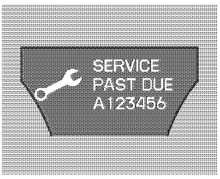
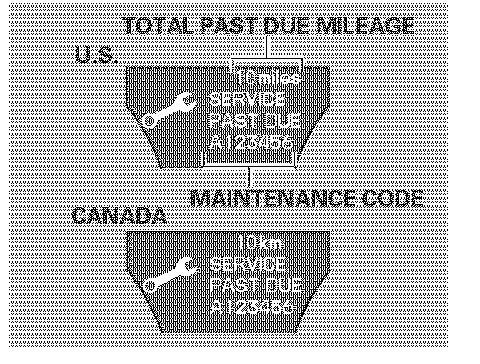

Maintenance Required Lamp/Indicator: Description and Operation
MAINTENANCE MINDER
References:
- For an explanation of Maintenance Minder Codes and what service should be performed refer to Maintenance / Service Intervals / Indicator Based Maintenance Service / Indicator Based Service for a complete list of the maintenance main items and sub items. Indicator Based Service
- For information on how to reset the display, refer to Instrument Panel, Gauges and Warning Indicators / Maintenance Required Lamp/Indicator / Service and Repair: Service and Repair
One of the most convenient and important features of the multi-information display is the maintenance minder.
Based on engine operation operating conditions and accumulated engine revolutions, the onboard computer in your vehicle calculates the remaining engine oil life.
The system also displays the code for other scheduled maintenance items needing service.
Engine Oil Life
To see the remaining engine oil life displayed on the multi-information display as a percentage, turn the ignition switch to the ON (II) position. Make sure the display shows blank, SH-AWD and tire pressure, and then press the SEL/RESET button on the steering wheel repeatedly until the engine oil life appears.
The remaining engine oil life is displayed according to the table above.
When the remaining engine oil life is 15 to 6 percent, the multi-information display shows a "SERVICE DUE SOON" message along with the maintenance schedule code indicating the main and sub items required at the time of the oil change.
When the remaining oil life is 1 to 5 percent, the multi-information display shows a "SERVICE DUE NOW" message with the same maintenance items "SERVICE DUE SOON" was displayed with, When you see this message the indicated maintenance should be performed as soon as possible.
Press the SEL/RESET button on the steering wheel repeatedly to select the engine oil life. The message "SERVICE", along with "5%", and the maintenance item code are displayed on the lower part of the multi-information display when the calculated engine oil life is 1-5 percent.

If the indicated maintenance service is not done and the remaining engine oil life reaches 0 % the multi-information display will show the message "SERVICE PAST DUE" and the maintenance item code(s). This message is displayed when the total mileage is less than 10 miles (for US models)/10 km (for Canadian models) after the engine oil life became 0 %.
These messages will come on every time you turn the ignition switch to the ON (II) position.
Immediately have the service performed, and make sure to reset the oil life minder. Refer to the article under "Resetting the Maintenance Minder".
The message will be canceled if the Arrow Down or Arrow Up button on the steering wheel is pressed. Press the Arrow Down or Arrow Up button to see the message again.
Press the SEL/RESET button on the steering wheel repeatedly to select the engine oil life. The message "SERVICE", along with "0 %", and the maintenance item code are displayed on the lower part of the multi-information display when the calculated engine oil life is 0-1 %.

If the indicated required service is not done and the remaining engine oil life becomes 0%, the multi-information display will show a "SERVICE PAST DUE" message, the total mileage after the remaining oil life became 0 %. and the maintenance item code(s).
This message is displayed when the vehicle is driven over 10 miles (for U.S. models) or 1 km (for Canadian models) after the 0% message is displayed.
The service should be immediately performed and the display reset. Refer to the article under "Resetting the Maintenance Minder".
The message will be canceled if the Arrow Down or Arrow Up button on the steering wheel is pressed. Press the Arrow Down or Arrow Up button to see the message again.
When you press the SEL/RESET button to select the engine oil life the message "SERVICE" along with the maintenance item code and the total negative mileage after the oil life became 0 % will be displayed on the lower part of the multi-information display.
Maintenance Main Items and Sub Items
All the maintenance items displayed in the multi-information display are in code. For an explanation of Maintenance Minder Codes and what service should be performed, refer to "Maintenance Reminder Service Codes".
Important Maintenance Precautions
If you have the required service done but do not reset the display, or reset the display without doing the service, the system will not show the proper maintenance intervals. This can lead to serious mechanical problems because you will no longer have an accurate record of when maintenance is needed.